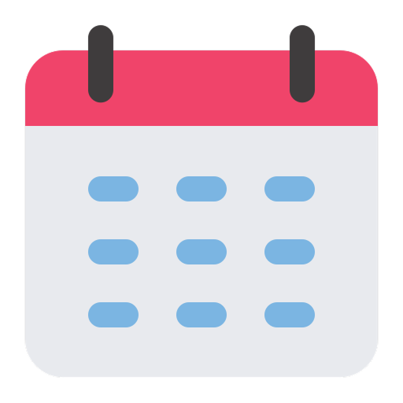
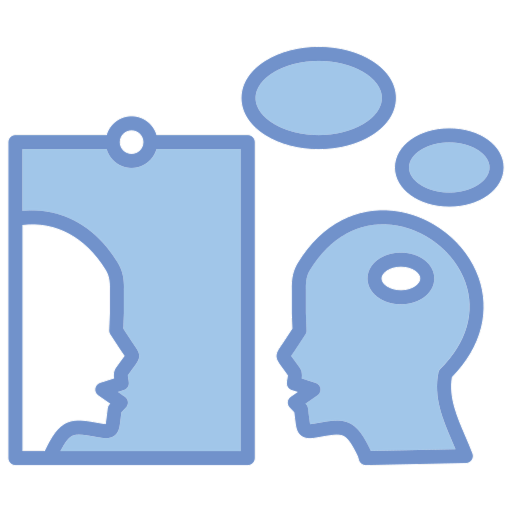
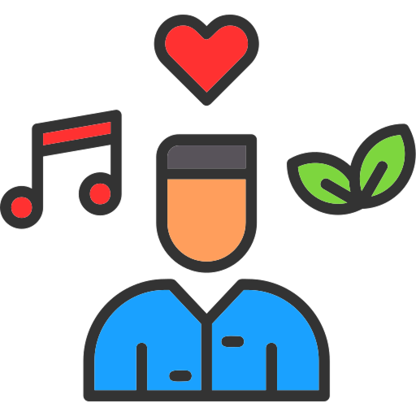

5-Year Plan
In the next 5 years I would have wanted to finish high school and go through a 4-year college for my desired major (most likely candidate being video game design/creation). I would also like to find some type of opportunity to experience or learn about the industry, and how to get a job there.

Reflection
At the beginning of the CART school year I really didn’t know what to expect in what the class would contain or be about. In terms of programming I had very little knowledge of the space, aside from a computer science class that I had taken in middle school. Just about everything in a site felt completely out of reach to me; especially all of the screen manipulation or storage of things like videos on sites. All of the basic things like HTML came to me quickly and were easy to follow as we went. The first project that REALLY tested my skills was the CSS Zen Garden project. By that point I understood HTML just about completely, but CSS was a whole nother battle to be fought. I had no rough time getting what I wanted to be translated onto the page, and had to be persistent to achieve my goals. The first time staring at a blank VSCode document felt a bit jarring, in the sense that this was where entire sites that I've seen everywhere started from: a blank file.
Awards
Recognition and achievements earned through hard work and dedication in academics. These awards reflect my commitment to excellence and continuous improvement in everything I pursue.
Certificates
Certifications earned in academics, such as three Princepal Honor Rolls earned throughout my highschool career. These credentials demonstrate my dedication to learning and willingness to work my hardest.

Hobbies
Outside of coding I enjoy music, gaming, and an assortment of other passtimes. These hobbies keep me balanced and often inspire creative ideas I bring back into my development work. They're a big part of who I am beyond the screen.